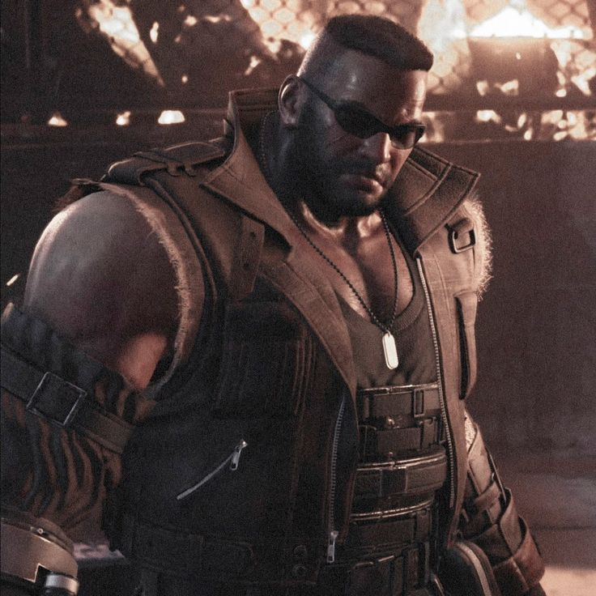

Un ex-SOLDADO de élite que se convierte en mercenario. Inicialmente frío y distante,
su historia se entrelaza con la del grupo mientras luchan contra fuerzas oscuras.
Tifa
Amiga de la infancia de Cloud y miembro del grupo de resistencia. Es hábil en el combate cuerpo a cuerpo y despierta, a la vez, compasión y fuerza.
Aeris
Una misteriosa joven con habilidades espirituales únicas.
Su presencia en el grupo desencadena eventos cruciales en la historia de Final Fantasy VII Rebirth.

Barret
Líder de AVALANCHA, un grupo de resistencia contra Shinra.
Barret es fuerte y apasionado en su lucha por la libertad de su pueblo y del planeta.
Yuffie
Una ninja traviesa y hábil en el arte del robo.
Se cruza con el grupo en su búsqueda de materias y desafía a los demás personajes a unirse a su causa.
Red XIII
Un león con habilidades únicas y la capacidad de hablar.
Aunque inicialmente cauteloso, se une al grupo en su misión para salvar el mundo.
Cait Sith
Un peculiar gato robot manejado por Reeve, un ejecutivo de la corporación Shinra.
A pesar de su apariencia inusual, juega un papel clave en la trama.
Cid
Un ingeniero y piloto de aeronaves, Cid es un personaje apasionado por la exploración espacial.
A pesar de su personalidad tosca, tiene un corazón valiente.
Vincent Valentine
Un misterioso ex-Turk con habilidades sobrenaturales.
Vincent lucha contra sus propios demonios internos mientras se une al grupo en su lucha contra fuerzas oscuras.